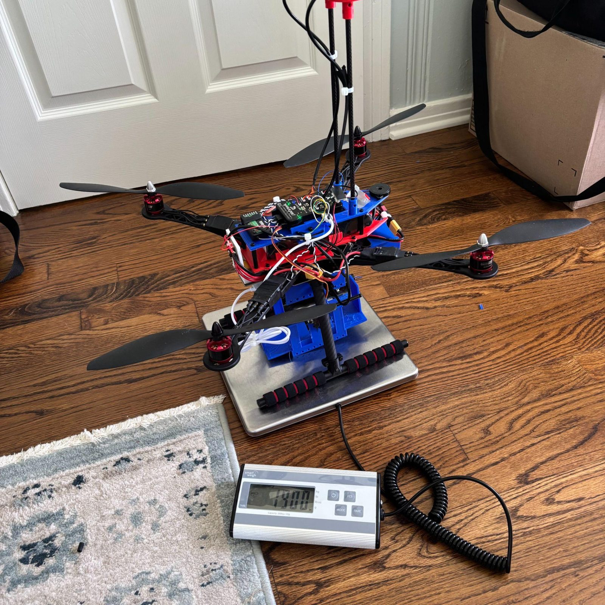
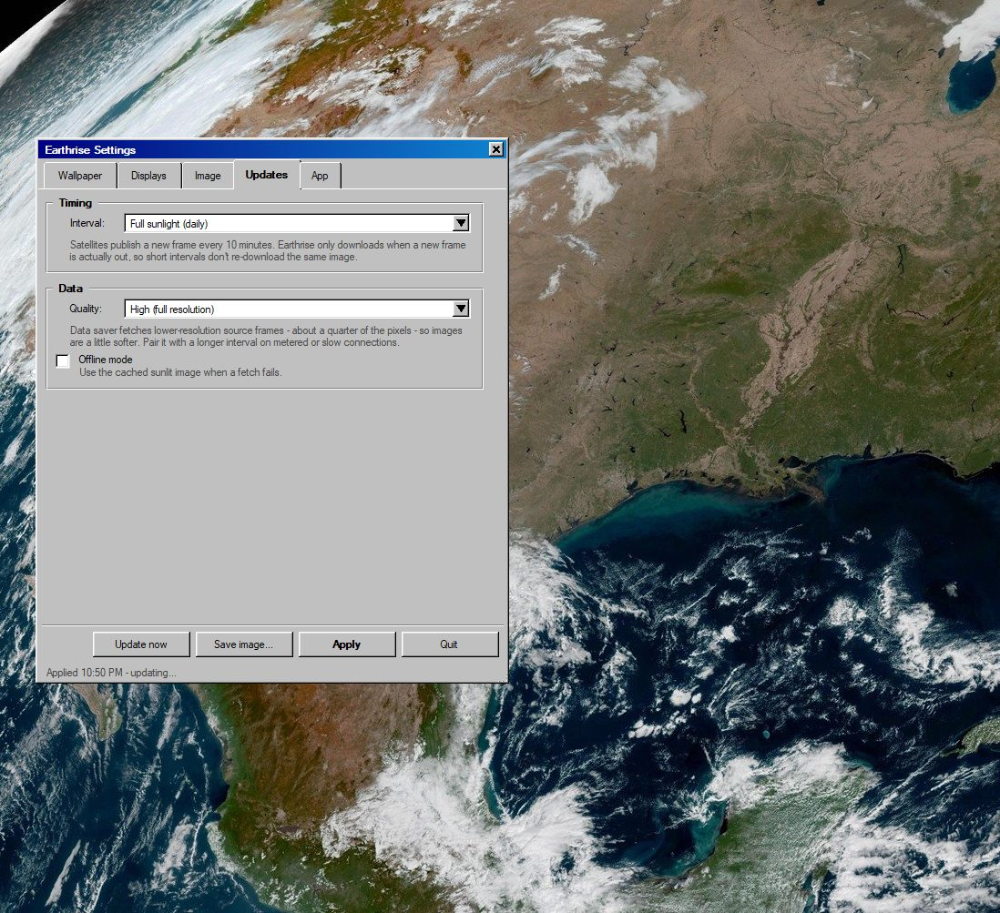
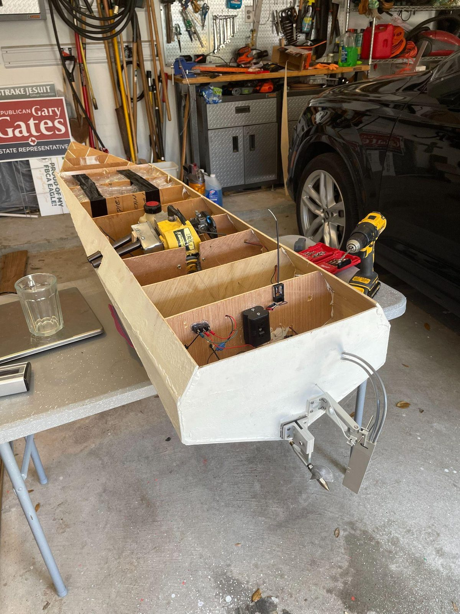
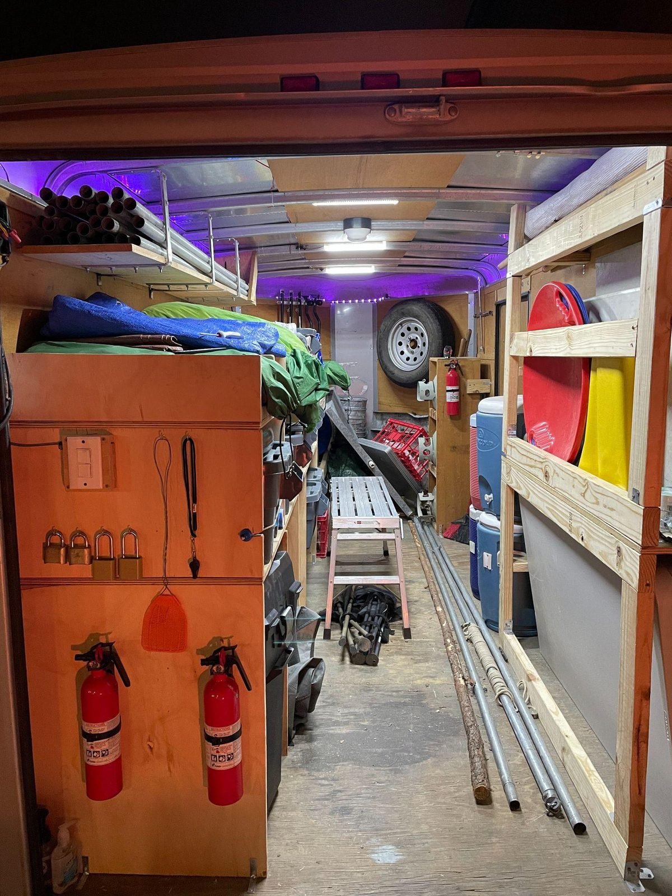
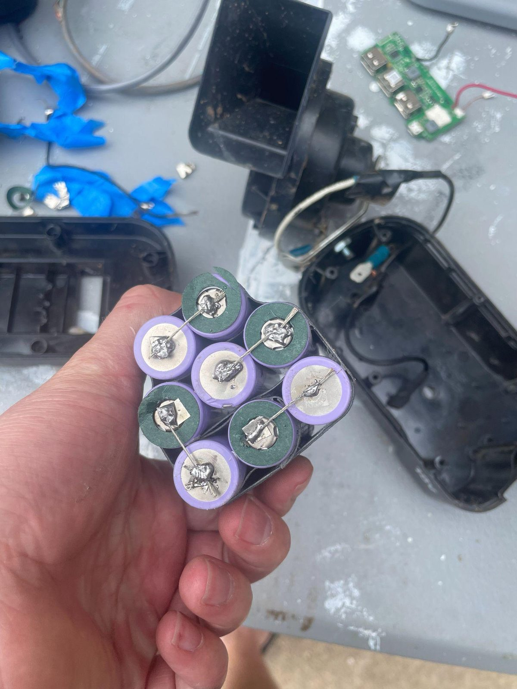
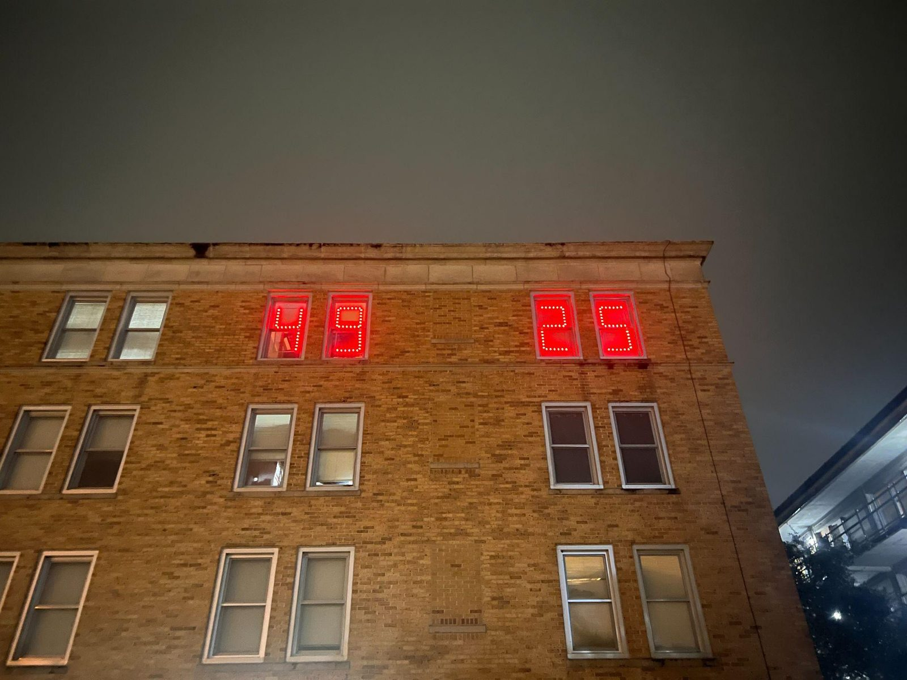

Ben Ratterree
General Engineering · Texas A&M University
About
I build hardware and software, mostly on my own time. My projects include an autonomous payload-delivery drone and a published Windows app. I'm looking for aerospace, maritime, and manufacturing engineering internships.
- Onshape
- 3D printing
- Soldering
- Raspberry Pi
- Arduino
- Python
- Excel
- AI coding tools
Projects

Autonomous Payload Delivery Drone
I built this drone from scratch using purchased parts and parts I designed and built using 3D printing/CAD.
View project
Earthrise
Earthrise is a Windows wallpaper app I published on the Microsoft Store. It combines public live satellite imagery with a computed starfield to make realistic desktop backgrounds.
View project
Arduino Pool Equipment Controller
The official Pentair acid pump controller had burned out twice before on our pool due to an undersized wire carrying more current than it should have and instead of buying a 3rd $300 controller I built a full controller for under $60.
View project
Custom RC Boat
I built a remote-control boat powered by a modified gas string-trimmer engine.
View project
Off-Grid Solar Lighting System
I built a solar-powered, off-grid 12 V lighting system.
View project
Car Horn for My Bike with Custom Battery
I put a car horn on my bicycle so I could honk at my friends and built a custom 18650 lithium-ion battery pack to power it.
View project
Wi-Fi Enabled Dorm Scoreboard
I built 4 custom 7-segment displays in my dorm windows to display the Aggie football score and to be used as a clock in the off season.
View projectBeyond the workbench
- Eagle Scout, December 2025
- Texas A&M Sailing Team
- FAA Student Pilot, 18 logged flight hours